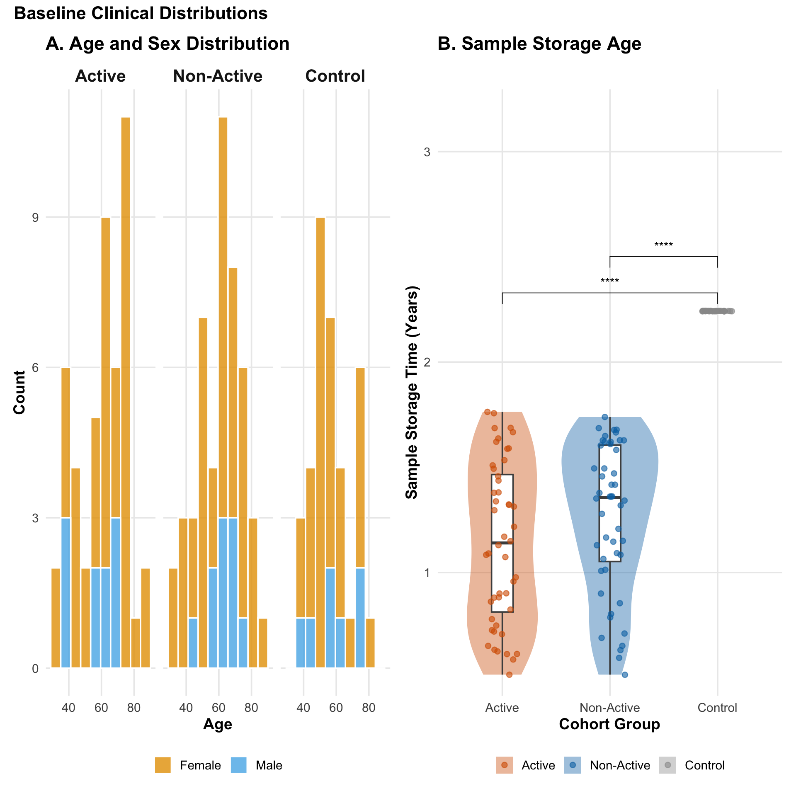
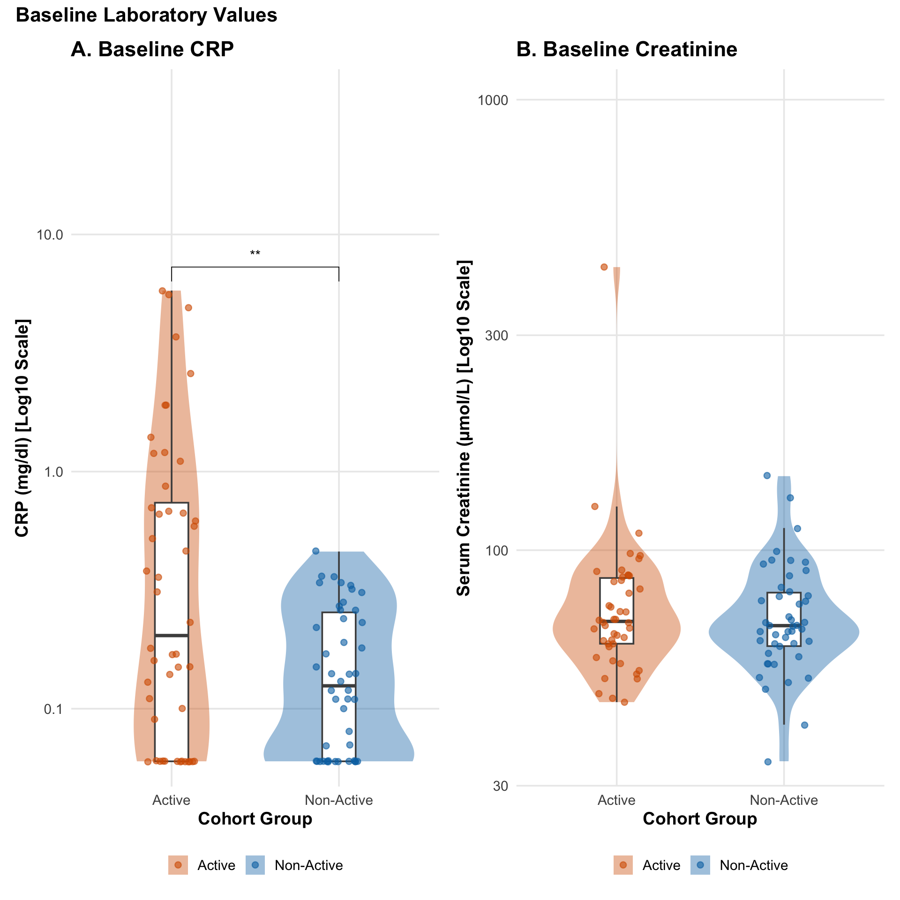
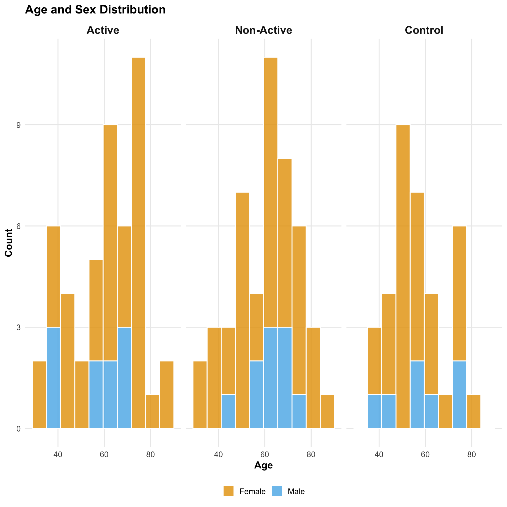
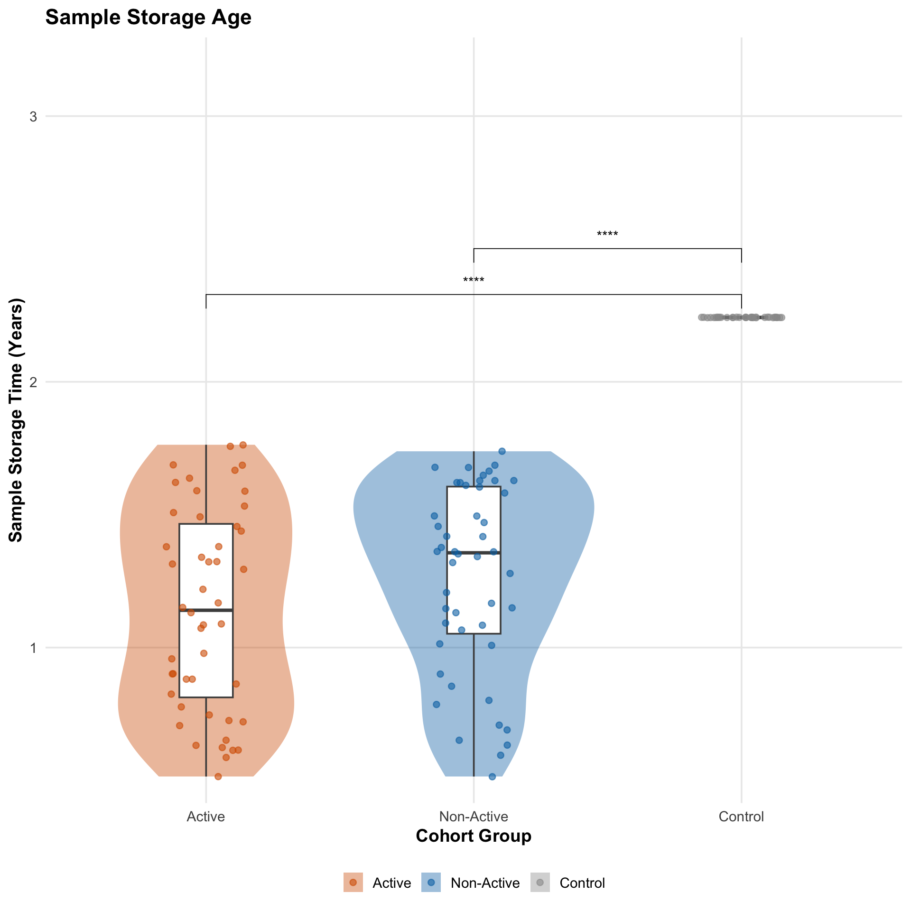
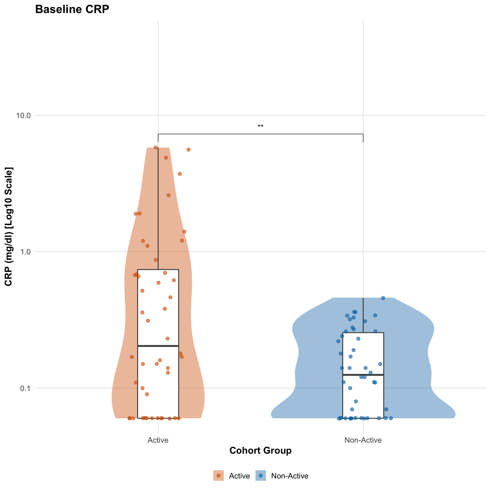
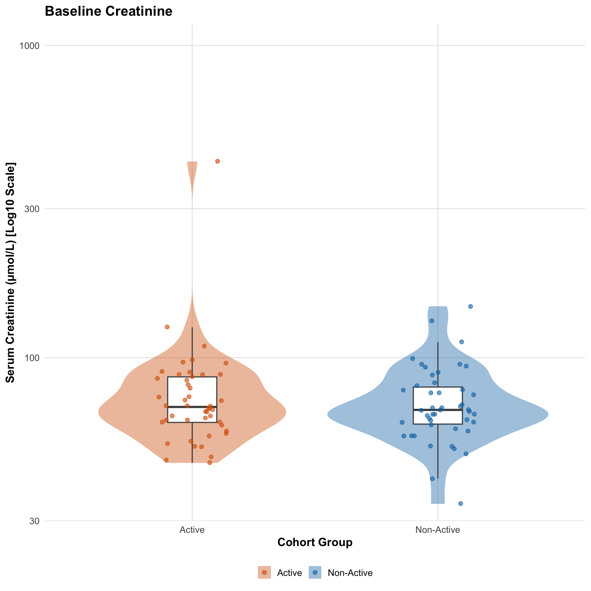

Last updated: 2026-04-03
Checks: 7 0
Knit directory: SSc_USZ/
This reproducible R Markdown analysis was created with workflowr (version 1.7.2). The Checks tab describes the reproducibility checks that were applied when the results were created. The Past versions tab lists the development history.
Great! Since the R Markdown file has been committed to the Git repository, you know the exact version of the code that produced these results.
Great job! The global environment was empty. Objects defined in the global environment can affect the analysis in your R Markdown file in unknown ways. For reproduciblity it’s best to always run the code in an empty environment.
The command set.seed(20260331) was run prior to running
the code in the R Markdown file. Setting a seed ensures that any results
that rely on randomness, e.g. subsampling or permutations, are
reproducible.
Great job! Recording the operating system, R version, and package versions is critical for reproducibility.
Nice! There were no cached chunks for this analysis, so you can be confident that you successfully produced the results during this run.
Great job! Using relative paths to the files within your workflowr project makes it easier to run your code on other machines.
Great! You are using Git for version control. Tracking code development and connecting the code version to the results is critical for reproducibility.
The results in this page were generated with repository version 1208116. See the Past versions tab to see a history of the changes made to the R Markdown and HTML files.
Note that you need to be careful to ensure that all relevant files for
the analysis have been committed to Git prior to generating the results
(you can use wflow_publish or
wflow_git_commit). workflowr only checks the R Markdown
file, but you know if there are other scripts or data files that it
depends on. Below is the status of the Git repository when the results
were generated:
Ignored files:
Ignored: .DS_Store
Ignored: .Rhistory
Ignored: .Rproj.user/
Ignored: output/01_data_import_and_qc/
Ignored: output/02_cohort_characterization/
Untracked files:
Untracked: renv.lock
Untracked: renv/
Unstaged changes:
Modified: .Rprofile
Modified: .gitignore
Note that any generated files, e.g. HTML, png, CSS, etc., are not included in this status report because it is ok for generated content to have uncommitted changes.
These are the previous versions of the repository in which changes were
made to the R Markdown
(analysis/02_cohort_characterization.Rmd) and HTML
(docs/02_cohort_characterization.html) files. If you’ve
configured a remote Git repository (see ?wflow_git_remote),
click on the hyperlinks in the table below to view the files as they
were in that past version.
| File | Version | Author | Date | Message |
|---|---|---|---|---|
| Rmd | 1208116 | alexander-gysin | 2026-04-03 | finished characterization |
library(tidyverse)── Attaching core tidyverse packages ──────────────────────── tidyverse 2.0.0 ──
✔ dplyr 1.2.0 ✔ readr 2.2.0
✔ forcats 1.0.1 ✔ stringr 1.6.0
✔ ggplot2 4.0.2 ✔ tibble 3.3.1
✔ lubridate 1.9.5 ✔ tidyr 1.3.2
✔ purrr 1.2.1
── Conflicts ────────────────────────────────────────── tidyverse_conflicts() ──
✖ dplyr::filter() masks stats::filter()
✖ dplyr::lag() masks stats::lag()
ℹ Use the conflicted package (<http://conflicted.r-lib.org/>) to force all conflicts to become errorslibrary(data.table)
Attaching package: 'data.table'
The following objects are masked from 'package:lubridate':
hour, isoweek, isoyear, mday, minute, month, quarter, second, wday,
week, yday, year
The following objects are masked from 'package:dplyr':
between, first, last
The following object is masked from 'package:purrr':
transposelibrary(lubridate) # Crucial for the date math you requested
library(gtsummary) # The Table 1 engine
library(here)here() starts at /Users/alexandergysin/Library/CloudStorage/OneDrive-Personal/01_Dokumente/01_Studium/07_Master/03_Dry_Lab/01_SSc_USZ/SSc_USZlibrary(patchwork)
library(ggpubr)
library(gt)
# Knmitr Config
knitr::opts_chunk$set(
warning = FALSE,
message = FALSE
)
# Output paths
current_file <- "02_cohort_characterization"
output_dir_data <- here::here("output", current_file)
if (!dir.exists(output_dir_data)) dir.create(output_dir_data, recursive = TRUE)
# Load global configuration (colors, groups)
source(here::here("code", "00_config.R"))Loading Global Configuration...
Configuration Successfully Loaded!# Load the clinical spine from Script 01
master_spine <- readRDS(here::here("output", "01_data_import_and_qc", "clinical_spine.rds"))# 1. Global Variables & Feature Engineering ------------------------------------
olink_date <- as.Date("2026-03-30")
default_control_date <- as.Date("2024-01-01")
stat_config <- list(
shapiro_alpha = 0.05,
variance_alpha = 0.05,
p_cutoff = 0.05
)
# Helper function to determine parametric status (DRY principle)
check_parametric <- function(df, var_col, group_col, config, transform = NULL) {
test_vec <- df[[var_col]][!is.na(df[[var_col]])]
group_vec <- df[[group_col]][!is.na(df[[var_col]])]
if (length(unique(group_vec)) < 2 || length(test_vec) < 3) return(FALSE)
if (!is.null(transform) && transform == "log10") {
valid_idx <- test_vec > 0
test_vec <- log10(test_vec[valid_idx])
group_vec <- group_vec[valid_idx]
if (length(unique(group_vec)) < 2 || length(test_vec) < 3) return(FALSE)
}
shapiro_p <- tryCatch(shapiro.test(test_vec)$p.value, error = function(e) 0)
bartlett_p <- tryCatch(bartlett.test(test_vec ~ group_vec)$p.value, error = function(e) 0)
return(shapiro_p > config$shapiro_alpha && bartlett_p > config$variance_alpha)
}
# Clean and calculate features
clean_spine <- master_spine %>%
mutate(
Birth_Year = as.numeric(trimws(Geburtsdatum)),
Entnahmedatum_Clean = case_when(
!is.na(Entnahmedatum) ~ as.Date(Entnahmedatum),
is.na(Entnahmedatum) & cohort_group == GRP_CONTROL ~ default_control_date,
TRUE ~ NA_Date_
),
Age = year(Entnahmedatum_Clean) - Birth_Year,
Sample_Age_Years = as.numeric(difftime(olink_date, Entnahmedatum_Clean, units = "days")) / 365.25,
Sex = case_when(
Geschlecht == "weiblich" ~ "Female",
Geschlecht == "männlich" ~ "Male",
TRUE ~ NA_character_
),
Creatinine = as.numeric(gsub(",", ".", `OR serum creatinine (micromoles/L)`)),
CRP = as.numeric(gsub(",", ".", `CRP (mg/dl)`)),
CRP = if_else(CRP <= 0, NA_real_, CRP),
cohort_group = factor(cohort_group, levels = c(GRP_ACTIVE, GRP_NON_ACTIVE, GRP_CONTROL))
)
# 2. Table Configurations ------------------------------------------------------
table_configs <- list(
table_1 = list(
title = "Baseline Demographics and Clinical Characteristics",
group_by = "cohort_group",
pairwise = TRUE, # Trigger pairwise columns in the table engine
variables = c("Age", "Sex", "CRP", "Creatinine", "Sample_Age_Years"),
labels = list(
Age = "Patient Age (Years)",
Sex = "Biological Sex",
CRP = "CRP (mg/dl)",
Creatinine = "Serum Creatinine (µmol/L)",
Sample_Age_Years = "Sample Storage Time (Years)"
)
)
)
# 3. Figure Configurations -----------------------------------------------------
figure_configs <- list(
figure_1 = list(
figure_title = "Baseline Clinical Distributions",
plots = list(
plot_1 = list(
title = "Age and Sex Distribution",
type = "stacked_histogram",
x_var = "Age",
fill_var = "Sex",
fill_palette = get_project_colors(c(SEX_FEMALE, SEX_MALE)), # Uses the unified dictionary
facet_by = "cohort_group",
bins = 10
),
plot_4 = list(
title = "Sample Storage Age",
type = "violin",
y_var = "Sample_Age_Years",
x_var = "cohort_group",
y_transform = NULL,
y_label = "Sample Storage Time (Years)",
add_stat_test = TRUE,
pairwise = TRUE
)
)
),
figure_2 = list(
figure_title = "Baseline Laboratory Values",
plots = list(
plot_2 = list(
title = "Baseline CRP",
type = "violin",
y_var = "CRP",
x_var = "cohort_group",
y_transform = "log10",
y_label = "CRP (mg/dl) [Log10 Scale]",
add_stat_test = TRUE,
pairwise = TRUE
),
plot_3 = list(
title = "Baseline Creatinine",
type = "violin",
y_var = "Creatinine",
x_var = "cohort_group",
y_transform = "log10",
y_label = "Serum Creatinine (µmol/L) [Log10 Scale]",
add_stat_test = TRUE,
pairwise = TRUE
)
)
)
)
cat("Cohort Feature Engineering and Configurations Loaded.\n")Cohort Feature Engineering and Configurations Loaded.cat("### Generating Tables & Statistical Summaries\n\n")### Generating Tables & Statistical Summariesgenerated_tables <- list()
for (tbl_name in names(table_configs)) {
conf <- table_configs[[tbl_name]]
cat(sprintf("#### Building: %s\n", conf$title))
tbl_data <- clean_spine %>% select(all_of(c(conf$variables, conf$group_by)))
gtsum_stats <- list()
gtsum_global_tests <- list()
gtsum_pairwise_tests <- list() # Dedicated list for binary paired tests
for (var in conf$variables) {
if (is.numeric(tbl_data[[var]])) {
is_parametric <- check_parametric(tbl_data, var, conf$group_by, stat_config, transform = NULL)
if (is_parametric) {
gtsum_stats[[var]] <- "{mean} ({sd})"
gtsum_global_tests[[var]] <- "aov"
gtsum_pairwise_tests[[var]] <- "t.test" # Assign standard t.test for pairs
} else {
gtsum_stats[[var]] <- "{median} ({p25}, {p75})"
gtsum_global_tests[[var]] <- "kruskal.test"
gtsum_pairwise_tests[[var]] <- "wilcox.test" # Assign Wilcoxon for pairs
}
}
}
# Step 1. Generate the Master Global Table
tbl_global <- tbl_data %>%
tbl_summary(
by = all_of(conf$group_by),
statistic = gtsum_stats,
missing = "ifany",
missing_text = "Missing (NA)"
) %>%
add_p(test = gtsum_global_tests) %>%
modify_header(p.value = "**Global p-value**")
# Step 2. If pairwise requested, dynamically loop and merge paired p-values
if (isTRUE(conf$pairwise)) {
valid_groups <- tbl_data %>%
group_by(!!sym(conf$group_by)) %>%
summarise(n = n(), .groups = "drop") %>%
filter(n >= 2) %>%
pull(!!sym(conf$group_by)) %>%
as.character()
all_comparisons <- combn(valid_groups, 2, simplify = FALSE)
pairwise_tbls <- list()
for (comp in all_comparisons) {
# Filter exactly to the two groups and drop unused factor levels
comp_data <- tbl_data %>%
filter(!!sym(conf$group_by) %in% comp) %>%
mutate(!!sym(conf$group_by) := droplevels(factor(!!sym(conf$group_by))))
ptbl <- comp_data %>%
tbl_summary(
by = all_of(conf$group_by),
statistic = gtsum_stats,
missing = "no" # Hide NAs in the sub-tables to prevent column clutter
) %>%
add_p(test = gtsum_pairwise_tests) %>%
modify_header(p.value = sprintf("**%s vs<br>%s**", comp[1], comp[2])) %>%
modify_column_hide(all_stat_cols()) # Delete the summary cols, keeping only the p-value
pairwise_tbls <- append(pairwise_tbls, list(ptbl))
}
# Merge the global table and all pairwise tables seamlessly
gtsum_obj <- tbl_merge(
tbls = append(list(tbl_global), pairwise_tbls),
tab_spanner = FALSE # Prevents gtsummary from adding "Table 1, Table 2" headers
)
} else {
gtsum_obj <- tbl_global
}
# Step 3. Apply final universal formatting
gtsum_obj <- gtsum_obj %>%
bold_labels() %>%
modify_header(label = "**Variable**") %>%
modify_caption(sprintf("**%s**", conf$title))
# Step 4. Export CSV
export_df <- as_tibble(gtsum_obj)
write_csv(export_df, file.path(output_dir_data, paste0(tbl_name, ".csv")))
# Step 5. Format to GT for beautiful HTML rendering
final_tbl <- gtsum_obj %>%
as_gt() %>%
gt::tab_style(
style = gt::cell_borders(sides = "top", color = "black", weight = gt::px(2)),
locations = gt::cells_body(rows = row_type == "label")
) %>%
gt::cols_align(align = "center", columns = contains("p.value")) # Cleanly align all the new p-value columns
generated_tables[[tbl_name]] <- final_tbl
print(final_tbl)
cat("\n---\n\n")
}#### Building: Baseline Demographics and Clinical Characteristics<div id="yafmoldpel" style="padding-left:0px;padding-right:0px;padding-top:10px;padding-bottom:10px;overflow-x:auto;overflow-y:auto;width:auto;height:auto;">
<style>#yafmoldpel table {
font-family: system-ui, 'Segoe UI', Roboto, Helvetica, Arial, sans-serif, 'Apple Color Emoji', 'Segoe UI Emoji', 'Segoe UI Symbol', 'Noto Color Emoji';
-webkit-font-smoothing: antialiased;
-moz-osx-font-smoothing: grayscale;
}
#yafmoldpel thead, #yafmoldpel tbody, #yafmoldpel tfoot, #yafmoldpel tr, #yafmoldpel td, #yafmoldpel th {
border-style: none;
}
#yafmoldpel p {
margin: 0;
padding: 0;
}
#yafmoldpel .gt_table {
display: table;
border-collapse: collapse;
line-height: normal;
margin-left: auto;
margin-right: auto;
color: #333333;
font-size: 16px;
font-weight: normal;
font-style: normal;
background-color: #FFFFFF;
width: auto;
border-top-style: solid;
border-top-width: 2px;
border-top-color: #A8A8A8;
border-right-style: none;
border-right-width: 2px;
border-right-color: #D3D3D3;
border-bottom-style: solid;
border-bottom-width: 2px;
border-bottom-color: #A8A8A8;
border-left-style: none;
border-left-width: 2px;
border-left-color: #D3D3D3;
}
#yafmoldpel .gt_caption {
padding-top: 4px;
padding-bottom: 4px;
}
#yafmoldpel .gt_title {
color: #333333;
font-size: 125%;
font-weight: initial;
padding-top: 4px;
padding-bottom: 4px;
padding-left: 5px;
padding-right: 5px;
border-bottom-color: #FFFFFF;
border-bottom-width: 0;
}
#yafmoldpel .gt_subtitle {
color: #333333;
font-size: 85%;
font-weight: initial;
padding-top: 3px;
padding-bottom: 5px;
padding-left: 5px;
padding-right: 5px;
border-top-color: #FFFFFF;
border-top-width: 0;
}
#yafmoldpel .gt_heading {
background-color: #FFFFFF;
text-align: center;
border-bottom-color: #FFFFFF;
border-left-style: none;
border-left-width: 1px;
border-left-color: #D3D3D3;
border-right-style: none;
border-right-width: 1px;
border-right-color: #D3D3D3;
}
#yafmoldpel .gt_bottom_border {
border-bottom-style: solid;
border-bottom-width: 2px;
border-bottom-color: #D3D3D3;
}
#yafmoldpel .gt_col_headings {
border-top-style: solid;
border-top-width: 2px;
border-top-color: #D3D3D3;
border-bottom-style: solid;
border-bottom-width: 2px;
border-bottom-color: #D3D3D3;
border-left-style: none;
border-left-width: 1px;
border-left-color: #D3D3D3;
border-right-style: none;
border-right-width: 1px;
border-right-color: #D3D3D3;
}
#yafmoldpel .gt_col_heading {
color: #333333;
background-color: #FFFFFF;
font-size: 100%;
font-weight: normal;
text-transform: inherit;
border-left-style: none;
border-left-width: 1px;
border-left-color: #D3D3D3;
border-right-style: none;
border-right-width: 1px;
border-right-color: #D3D3D3;
vertical-align: bottom;
padding-top: 5px;
padding-bottom: 6px;
padding-left: 5px;
padding-right: 5px;
overflow-x: hidden;
}
#yafmoldpel .gt_column_spanner_outer {
color: #333333;
background-color: #FFFFFF;
font-size: 100%;
font-weight: normal;
text-transform: inherit;
padding-top: 0;
padding-bottom: 0;
padding-left: 4px;
padding-right: 4px;
}
#yafmoldpel .gt_column_spanner_outer:first-child {
padding-left: 0;
}
#yafmoldpel .gt_column_spanner_outer:last-child {
padding-right: 0;
}
#yafmoldpel .gt_column_spanner {
border-bottom-style: solid;
border-bottom-width: 2px;
border-bottom-color: #D3D3D3;
vertical-align: bottom;
padding-top: 5px;
padding-bottom: 5px;
overflow-x: hidden;
display: inline-block;
width: 100%;
}
#yafmoldpel .gt_spanner_row {
border-bottom-style: hidden;
}
#yafmoldpel .gt_group_heading {
padding-top: 8px;
padding-bottom: 8px;
padding-left: 5px;
padding-right: 5px;
color: #333333;
background-color: #FFFFFF;
font-size: 100%;
font-weight: initial;
text-transform: inherit;
border-top-style: solid;
border-top-width: 2px;
border-top-color: #D3D3D3;
border-bottom-style: solid;
border-bottom-width: 2px;
border-bottom-color: #D3D3D3;
border-left-style: none;
border-left-width: 1px;
border-left-color: #D3D3D3;
border-right-style: none;
border-right-width: 1px;
border-right-color: #D3D3D3;
vertical-align: middle;
text-align: left;
}
#yafmoldpel .gt_empty_group_heading {
padding: 0.5px;
color: #333333;
background-color: #FFFFFF;
font-size: 100%;
font-weight: initial;
border-top-style: solid;
border-top-width: 2px;
border-top-color: #D3D3D3;
border-bottom-style: solid;
border-bottom-width: 2px;
border-bottom-color: #D3D3D3;
vertical-align: middle;
}
#yafmoldpel .gt_from_md > :first-child {
margin-top: 0;
}
#yafmoldpel .gt_from_md > :last-child {
margin-bottom: 0;
}
#yafmoldpel .gt_row {
padding-top: 8px;
padding-bottom: 8px;
padding-left: 5px;
padding-right: 5px;
margin: 10px;
border-top-style: solid;
border-top-width: 1px;
border-top-color: #D3D3D3;
border-left-style: none;
border-left-width: 1px;
border-left-color: #D3D3D3;
border-right-style: none;
border-right-width: 1px;
border-right-color: #D3D3D3;
vertical-align: middle;
overflow-x: hidden;
}
#yafmoldpel .gt_stub {
color: #333333;
background-color: #FFFFFF;
font-size: 100%;
font-weight: initial;
text-transform: inherit;
border-right-style: solid;
border-right-width: 2px;
border-right-color: #D3D3D3;
padding-left: 5px;
padding-right: 5px;
}
#yafmoldpel .gt_stub_row_group {
color: #333333;
background-color: #FFFFFF;
font-size: 100%;
font-weight: initial;
text-transform: inherit;
border-right-style: solid;
border-right-width: 2px;
border-right-color: #D3D3D3;
padding-left: 5px;
padding-right: 5px;
vertical-align: top;
}
#yafmoldpel .gt_row_group_first td {
border-top-width: 2px;
}
#yafmoldpel .gt_row_group_first th {
border-top-width: 2px;
}
#yafmoldpel .gt_summary_row {
color: #333333;
background-color: #FFFFFF;
text-transform: inherit;
padding-top: 8px;
padding-bottom: 8px;
padding-left: 5px;
padding-right: 5px;
}
#yafmoldpel .gt_first_summary_row {
border-top-style: solid;
border-top-color: #D3D3D3;
}
#yafmoldpel .gt_first_summary_row.thick {
border-top-width: 2px;
}
#yafmoldpel .gt_last_summary_row {
padding-top: 8px;
padding-bottom: 8px;
padding-left: 5px;
padding-right: 5px;
border-bottom-style: solid;
border-bottom-width: 2px;
border-bottom-color: #D3D3D3;
}
#yafmoldpel .gt_grand_summary_row {
color: #333333;
background-color: #FFFFFF;
text-transform: inherit;
padding-top: 8px;
padding-bottom: 8px;
padding-left: 5px;
padding-right: 5px;
}
#yafmoldpel .gt_first_grand_summary_row {
padding-top: 8px;
padding-bottom: 8px;
padding-left: 5px;
padding-right: 5px;
border-top-style: double;
border-top-width: 6px;
border-top-color: #D3D3D3;
}
#yafmoldpel .gt_last_grand_summary_row_top {
padding-top: 8px;
padding-bottom: 8px;
padding-left: 5px;
padding-right: 5px;
border-bottom-style: double;
border-bottom-width: 6px;
border-bottom-color: #D3D3D3;
}
#yafmoldpel .gt_striped {
background-color: rgba(128, 128, 128, 0.05);
}
#yafmoldpel .gt_table_body {
border-top-style: solid;
border-top-width: 2px;
border-top-color: #D3D3D3;
border-bottom-style: solid;
border-bottom-width: 2px;
border-bottom-color: #D3D3D3;
}
#yafmoldpel .gt_footnotes {
color: #333333;
background-color: #FFFFFF;
border-bottom-style: none;
border-bottom-width: 2px;
border-bottom-color: #D3D3D3;
border-left-style: none;
border-left-width: 2px;
border-left-color: #D3D3D3;
border-right-style: none;
border-right-width: 2px;
border-right-color: #D3D3D3;
}
#yafmoldpel .gt_footnote {
margin: 0px;
font-size: 90%;
padding-top: 4px;
padding-bottom: 4px;
padding-left: 5px;
padding-right: 5px;
}
#yafmoldpel .gt_sourcenotes {
color: #333333;
background-color: #FFFFFF;
border-bottom-style: none;
border-bottom-width: 2px;
border-bottom-color: #D3D3D3;
border-left-style: none;
border-left-width: 2px;
border-left-color: #D3D3D3;
border-right-style: none;
border-right-width: 2px;
border-right-color: #D3D3D3;
}
#yafmoldpel .gt_sourcenote {
font-size: 90%;
padding-top: 4px;
padding-bottom: 4px;
padding-left: 5px;
padding-right: 5px;
}
#yafmoldpel .gt_left {
text-align: left;
}
#yafmoldpel .gt_center {
text-align: center;
}
#yafmoldpel .gt_right {
text-align: right;
font-variant-numeric: tabular-nums;
}
#yafmoldpel .gt_font_normal {
font-weight: normal;
}
#yafmoldpel .gt_font_bold {
font-weight: bold;
}
#yafmoldpel .gt_font_italic {
font-style: italic;
}
#yafmoldpel .gt_super {
font-size: 65%;
}
#yafmoldpel .gt_footnote_marks {
font-size: 75%;
vertical-align: 0.4em;
position: initial;
}
#yafmoldpel .gt_asterisk {
font-size: 100%;
vertical-align: 0;
}
#yafmoldpel .gt_indent_1 {
text-indent: 5px;
}
#yafmoldpel .gt_indent_2 {
text-indent: 10px;
}
#yafmoldpel .gt_indent_3 {
text-indent: 15px;
}
#yafmoldpel .gt_indent_4 {
text-indent: 20px;
}
#yafmoldpel .gt_indent_5 {
text-indent: 25px;
}
#yafmoldpel .katex-display {
display: inline-flex !important;
margin-bottom: 0.75em !important;
}
#yafmoldpel div.Reactable > div.rt-table > div.rt-thead > div.rt-tr.rt-tr-group-header > div.rt-th-group:after {
height: 0px !important;
}
</style>
<table class="gt_table" data-quarto-disable-processing="false" data-quarto-bootstrap="false">
<caption><span class='gt_from_md'><strong>Baseline Demographics and Clinical Characteristics</strong></span></caption>
<thead>
<tr class="gt_col_headings">
<th class="gt_col_heading gt_columns_bottom_border gt_left" rowspan="1" colspan="1" scope="col" id="label"><span class='gt_from_md'><strong>Variable</strong></span></th>
<th class="gt_col_heading gt_columns_bottom_border gt_center" rowspan="1" colspan="1" scope="col" id="stat_1_1"><span class='gt_from_md'><strong>Active</strong><br />
N = 48</span><span class="gt_footnote_marks" style="white-space:nowrap;font-style:italic;font-weight:normal;line-height:0;"><sup>1</sup></span></th>
<th class="gt_col_heading gt_columns_bottom_border gt_center" rowspan="1" colspan="1" scope="col" id="stat_2_1"><span class='gt_from_md'><strong>Non-Active</strong><br />
N = 48</span><span class="gt_footnote_marks" style="white-space:nowrap;font-style:italic;font-weight:normal;line-height:0;"><sup>1</sup></span></th>
<th class="gt_col_heading gt_columns_bottom_border gt_center" rowspan="1" colspan="1" scope="col" id="stat_3_1"><span class='gt_from_md'><strong>Control</strong><br />
N = 35</span><span class="gt_footnote_marks" style="white-space:nowrap;font-style:italic;font-weight:normal;line-height:0;"><sup>1</sup></span></th>
<th class="gt_col_heading gt_columns_bottom_border gt_center" rowspan="1" colspan="1" scope="col" id="p.value_1"><span class='gt_from_md'><strong>Global p-value</strong></span><span class="gt_footnote_marks" style="white-space:nowrap;font-style:italic;font-weight:normal;line-height:0;"><sup>2</sup></span></th>
<th class="gt_col_heading gt_columns_bottom_border gt_center" rowspan="1" colspan="1" scope="col" id="p.value_2"><span class='gt_from_md'><strong>Active vs<br>Non-Active</strong></span><span class="gt_footnote_marks" style="white-space:nowrap;font-style:italic;font-weight:normal;line-height:0;"><sup>3</sup></span></th>
<th class="gt_col_heading gt_columns_bottom_border gt_center" rowspan="1" colspan="1" scope="col" id="p.value_3"><span class='gt_from_md'><strong>Active vs<br>Control</strong></span><span class="gt_footnote_marks" style="white-space:nowrap;font-style:italic;font-weight:normal;line-height:0;"><sup>4</sup></span></th>
<th class="gt_col_heading gt_columns_bottom_border gt_center" rowspan="1" colspan="1" scope="col" id="p.value_4"><span class='gt_from_md'><strong>Non-Active vs<br>Control</strong></span><span class="gt_footnote_marks" style="white-space:nowrap;font-style:italic;font-weight:normal;line-height:0;"><sup>4</sup></span></th>
</tr>
</thead>
<tbody class="gt_table_body">
<tr><td headers="label" class="gt_row gt_left" style="font-weight: bold; border-top-width: 2px; border-top-style: solid; border-top-color: black;">Age</td>
<td headers="stat_1_1" class="gt_row gt_center" style="border-top-width: 2px; border-top-style: solid; border-top-color: black;">62 (48, 74)</td>
<td headers="stat_2_1" class="gt_row gt_center" style="border-top-width: 2px; border-top-style: solid; border-top-color: black;">62 (48, 70)</td>
<td headers="stat_3_1" class="gt_row gt_center" style="border-top-width: 2px; border-top-style: solid; border-top-color: black;">56 (48, 64)</td>
<td headers="p.value_1" class="gt_row gt_center" style="border-top-width: 2px; border-top-style: solid; border-top-color: black;">0.3</td>
<td headers="p.value_2" class="gt_row gt_center" style="border-top-width: 2px; border-top-style: solid; border-top-color: black;">0.9</td>
<td headers="p.value_3" class="gt_row gt_center" style="border-top-width: 2px; border-top-style: solid; border-top-color: black;">0.2</td>
<td headers="p.value_4" class="gt_row gt_center" style="border-top-width: 2px; border-top-style: solid; border-top-color: black;">0.2</td></tr>
<tr><td headers="label" class="gt_row gt_left" style="font-weight: bold; border-top-width: 2px; border-top-style: solid; border-top-color: black;">Sex</td>
<td headers="stat_1_1" class="gt_row gt_center" style="border-top-width: 2px; border-top-style: solid; border-top-color: black;"><br /></td>
<td headers="stat_2_1" class="gt_row gt_center" style="border-top-width: 2px; border-top-style: solid; border-top-color: black;"><br /></td>
<td headers="stat_3_1" class="gt_row gt_center" style="border-top-width: 2px; border-top-style: solid; border-top-color: black;"><br /></td>
<td headers="p.value_1" class="gt_row gt_center" style="border-top-width: 2px; border-top-style: solid; border-top-color: black;">>0.9</td>
<td headers="p.value_2" class="gt_row gt_center" style="border-top-width: 2px; border-top-style: solid; border-top-color: black;">>0.9</td>
<td headers="p.value_3" class="gt_row gt_center" style="border-top-width: 2px; border-top-style: solid; border-top-color: black;">>0.9</td>
<td headers="p.value_4" class="gt_row gt_center" style="border-top-width: 2px; border-top-style: solid; border-top-color: black;">>0.9</td></tr>
<tr><td headers="label" class="gt_row gt_left"> Female</td>
<td headers="stat_1_1" class="gt_row gt_center">38 (79%)</td>
<td headers="stat_2_1" class="gt_row gt_center">38 (79%)</td>
<td headers="stat_3_1" class="gt_row gt_center">28 (80%)</td>
<td headers="p.value_1" class="gt_row gt_center"><br /></td>
<td headers="p.value_2" class="gt_row gt_center"><br /></td>
<td headers="p.value_3" class="gt_row gt_center"><br /></td>
<td headers="p.value_4" class="gt_row gt_center"><br /></td></tr>
<tr><td headers="label" class="gt_row gt_left"> Male</td>
<td headers="stat_1_1" class="gt_row gt_center">10 (21%)</td>
<td headers="stat_2_1" class="gt_row gt_center">10 (21%)</td>
<td headers="stat_3_1" class="gt_row gt_center">7 (20%)</td>
<td headers="p.value_1" class="gt_row gt_center"><br /></td>
<td headers="p.value_2" class="gt_row gt_center"><br /></td>
<td headers="p.value_3" class="gt_row gt_center"><br /></td>
<td headers="p.value_4" class="gt_row gt_center"><br /></td></tr>
<tr><td headers="label" class="gt_row gt_left" style="font-weight: bold; border-top-width: 2px; border-top-style: solid; border-top-color: black;">CRP</td>
<td headers="stat_1_1" class="gt_row gt_center" style="border-top-width: 2px; border-top-style: solid; border-top-color: black;">0.21 (0.06, 0.79)</td>
<td headers="stat_2_1" class="gt_row gt_center" style="border-top-width: 2px; border-top-style: solid; border-top-color: black;">0.13 (0.06, 0.26)</td>
<td headers="stat_3_1" class="gt_row gt_center" style="border-top-width: 2px; border-top-style: solid; border-top-color: black;">NA (NA, NA)</td>
<td headers="p.value_1" class="gt_row gt_center" style="border-top-width: 2px; border-top-style: solid; border-top-color: black;">0.009</td>
<td headers="p.value_2" class="gt_row gt_center" style="border-top-width: 2px; border-top-style: solid; border-top-color: black;">0.010</td>
<td headers="p.value_3" class="gt_row gt_center" style="border-top-width: 2px; border-top-style: solid; border-top-color: black;"><br /></td>
<td headers="p.value_4" class="gt_row gt_center" style="border-top-width: 2px; border-top-style: solid; border-top-color: black;"><br /></td></tr>
<tr><td headers="label" class="gt_row gt_left"> Missing (NA)</td>
<td headers="stat_1_1" class="gt_row gt_center">0</td>
<td headers="stat_2_1" class="gt_row gt_center">2</td>
<td headers="stat_3_1" class="gt_row gt_center">35</td>
<td headers="p.value_1" class="gt_row gt_center"><br /></td>
<td headers="p.value_2" class="gt_row gt_center"><br /></td>
<td headers="p.value_3" class="gt_row gt_center"><br /></td>
<td headers="p.value_4" class="gt_row gt_center"><br /></td></tr>
<tr><td headers="label" class="gt_row gt_left" style="font-weight: bold; border-top-width: 2px; border-top-style: solid; border-top-color: black;">Creatinine</td>
<td headers="stat_1_1" class="gt_row gt_center" style="border-top-width: 2px; border-top-style: solid; border-top-color: black;">70 (62, 87)</td>
<td headers="stat_2_1" class="gt_row gt_center" style="border-top-width: 2px; border-top-style: solid; border-top-color: black;">68 (61, 81)</td>
<td headers="stat_3_1" class="gt_row gt_center" style="border-top-width: 2px; border-top-style: solid; border-top-color: black;">NA (NA, NA)</td>
<td headers="p.value_1" class="gt_row gt_center" style="border-top-width: 2px; border-top-style: solid; border-top-color: black;">0.7</td>
<td headers="p.value_2" class="gt_row gt_center" style="border-top-width: 2px; border-top-style: solid; border-top-color: black;">0.7</td>
<td headers="p.value_3" class="gt_row gt_center" style="border-top-width: 2px; border-top-style: solid; border-top-color: black;"><br /></td>
<td headers="p.value_4" class="gt_row gt_center" style="border-top-width: 2px; border-top-style: solid; border-top-color: black;"><br /></td></tr>
<tr><td headers="label" class="gt_row gt_left"> Missing (NA)</td>
<td headers="stat_1_1" class="gt_row gt_center">2</td>
<td headers="stat_2_1" class="gt_row gt_center">2</td>
<td headers="stat_3_1" class="gt_row gt_center">35</td>
<td headers="p.value_1" class="gt_row gt_center"><br /></td>
<td headers="p.value_2" class="gt_row gt_center"><br /></td>
<td headers="p.value_3" class="gt_row gt_center"><br /></td>
<td headers="p.value_4" class="gt_row gt_center"><br /></td></tr>
<tr><td headers="label" class="gt_row gt_left" style="font-weight: bold; border-top-width: 2px; border-top-style: solid; border-top-color: black;">Sample_Age_Years</td>
<td headers="stat_1_1" class="gt_row gt_center" style="border-top-width: 2px; border-top-style: solid; border-top-color: black;">1.14 (0.80, 1.47)</td>
<td headers="stat_2_1" class="gt_row gt_center" style="border-top-width: 2px; border-top-style: solid; border-top-color: black;">1.36 (1.04, 1.61)</td>
<td headers="stat_3_1" class="gt_row gt_center" style="border-top-width: 2px; border-top-style: solid; border-top-color: black;">2.24 (2.24, 2.24)</td>
<td headers="p.value_1" class="gt_row gt_center" style="border-top-width: 2px; border-top-style: solid; border-top-color: black;"><0.001</td>
<td headers="p.value_2" class="gt_row gt_center" style="border-top-width: 2px; border-top-style: solid; border-top-color: black;">0.12</td>
<td headers="p.value_3" class="gt_row gt_center" style="border-top-width: 2px; border-top-style: solid; border-top-color: black;"><0.001</td>
<td headers="p.value_4" class="gt_row gt_center" style="border-top-width: 2px; border-top-style: solid; border-top-color: black;"><0.001</td></tr>
</tbody>
<tfoot>
<tr class="gt_footnotes">
<td class="gt_footnote" colspan="8"><span class="gt_footnote_marks" style="white-space:nowrap;font-style:italic;font-weight:normal;line-height:0;"><sup>1</sup></span> <span class='gt_from_md'>Median (Q1, Q3); n (%)</span></td>
</tr>
<tr class="gt_footnotes">
<td class="gt_footnote" colspan="8"><span class="gt_footnote_marks" style="white-space:nowrap;font-style:italic;font-weight:normal;line-height:0;"><sup>2</sup></span> <span class='gt_from_md'>Kruskal-Wallis rank sum test; Pearson’s Chi-squared test</span></td>
</tr>
<tr class="gt_footnotes">
<td class="gt_footnote" colspan="8"><span class="gt_footnote_marks" style="white-space:nowrap;font-style:italic;font-weight:normal;line-height:0;"><sup>3</sup></span> <span class='gt_from_md'>Wilcoxon rank sum test; Pearson’s Chi-squared test</span></td>
</tr>
<tr class="gt_footnotes">
<td class="gt_footnote" colspan="8"><span class="gt_footnote_marks" style="white-space:nowrap;font-style:italic;font-weight:normal;line-height:0;"><sup>4</sup></span> <span class='gt_from_md'>Wilcoxon rank sum test; Pearson’s Chi-squared test; NA</span></td>
</tr>
</tfoot>
</table>
</div>
---cat("### Generating Clinical Visualizations\n")### Generating Clinical Visualizationsgroup_levels <- levels(clean_spine$cohort_group)
plot_colors <- get_project_colors(group_levels) # Uses the unified dictionary
individual_plots <- list()
stitched_figures <- list()
generate_base_plot <- function(conf) {
if (conf$type == "stacked_histogram") {
hist_bins <- if (!is.null(conf$bins)) conf$bins else 30
p <- ggplot(clean_spine, aes(x = .data[[conf$x_var]], fill = .data[[conf$fill_var]])) +
geom_histogram(bins = hist_bins, color = "white", alpha = 0.8) +
scale_fill_manual(values = c("Female" = "#E69F00", "Male" = "#56B4E9")) +
labs(title = conf$title, x = conf$x_var, y = "Count", fill = conf$fill_var)
if (!is.null(conf$facet_by)) {
p <- p + facet_wrap(vars(!!sym(conf$facet_by)))
}
} else if (conf$type == "violin") {
plot_data <- clean_spine %>% filter(!is.na(.data[[conf$y_var]]))
actual_y_label <- if (!is.null(conf$y_label)) conf$y_label else conf$y_var
p <- ggplot(plot_data, aes(x = .data[[conf$x_var]], y = .data[[conf$y_var]])) +
geom_violin(aes(fill = .data[[conf$x_var]]), alpha = 0.4, color = "transparent") +
geom_boxplot(width = 0.2, fill = "white", color = "grey30", outlier.shape = NA) +
geom_jitter(aes(color = .data[[conf$x_var]]), width = 0.15, alpha = 0.6) +
scale_fill_manual(values = plot_colors) +
scale_color_manual(values = plot_colors) +
labs(title = conf$title, x = "Cohort Group", y = actual_y_label) +
theme(legend.position = "none")
if (!is.null(conf$y_transform) && conf$y_transform == "log10") {
p <- p + scale_y_log10(expand = expansion(mult = c(0.05, 0.40)))
} else {
p <- p + scale_y_continuous(expand = expansion(mult = c(0.05, 0.40)))
}
if (isTRUE(conf$add_stat_test)) {
is_parametric <- check_parametric(plot_data, conf$y_var, conf$x_var, stat_config, transform = conf$y_transform)
dyn_pairwise_method <- if (is_parametric) "t.test" else "wilcox.test"
dyn_global_method <- if (is_parametric) "anova" else "kruskal.test"
if (isTRUE(conf$pairwise)) {
valid_groups <- plot_data %>%
group_by(!!sym(conf$x_var)) %>%
summarise(n = n(), .groups = "drop") %>%
filter(n >= 2) %>%
pull(!!sym(conf$x_var)) %>%
as.character()
if (length(valid_groups) >= 2) {
all_comparisons <- combn(valid_groups, 2, simplify = FALSE)
sig_comparisons <- list()
for (comp in all_comparisons) {
g1 <- plot_data[[conf$y_var]][plot_data[[conf$x_var]] == comp[1]]
g2 <- plot_data[[conf$y_var]][plot_data[[conf$x_var]] == comp[2]]
if (length(g1) >= 2 && length(g2) >= 2) {
if (!is.null(conf$y_transform) && conf$y_transform == "log10") {
g1 <- log10(g1[g1 > 0])
g2 <- log10(g2[g2 > 0])
}
p_val <- tryCatch({
if (dyn_pairwise_method == "t.test") {
t.test(g1, g2)$p.value
} else {
wilcox.test(g1, g2, exact = FALSE)$p.value
}
}, error = function(e) 1)
if (isTRUE(p_val < stat_config$p_cutoff)) {
sig_comparisons <- append(sig_comparisons, list(comp))
}
}
}
if (length(sig_comparisons) > 0) {
p <- p + stat_compare_means(
comparisons = sig_comparisons,
method = dyn_pairwise_method,
label = "p.signif",
hide.ns = TRUE,
step.increase = 0.1
)
}
}
} else {
p <- p + stat_compare_means(method = dyn_global_method, label.y.npc = "top")
}
}
}
p <- p + theme_project_base()
return(p)
}
for (fig_name in names(figure_configs)) {
fig_conf <- figure_configs[[fig_name]]
patchwork_ready_plots <- list()
plot_names <- names(fig_conf$plots)
for (i in seq_along(plot_names)) {
p_name <- plot_names[i]
p_conf <- fig_conf$plots[[p_name]]
pure_plot <- generate_base_plot(p_conf)
individual_plots[[p_name]] <- pure_plot
abc_title <- sprintf("%s. %s", LETTERS[i], p_conf$title)
patchwork_ready_plots[[i]] <- pure_plot + labs(title = abc_title)
}
stitched_figures[[fig_name]] <- wrap_plots(patchwork_ready_plots, ncol = 2) +
plot_annotation(title = fig_conf$figure_title, theme = theme(plot.title = element_text(size = 16, face = "bold")))
}
# Print Outputs & Export -------------------------------------------------------
cat("#### Multi-Panel Stitched Figures\n\n")#### Multi-Panel Stitched Figuresfor (fig_name in names(stitched_figures)) {
print(stitched_figures[[fig_name]])
cat("\n\n")
# Save the master stitched patchwork layout to PNG (Large size)
ggsave(
filename = file.path(output_dir_data, paste0(fig_name, ".png")),
plot = stitched_figures[[fig_name]],
width = 12, height = 10, dpi = 300, bg = "white"
)
}

cat("#### Individual Standalone Plots (No ABC Ennumeration)\n\n")#### Individual Standalone Plots (No ABC Ennumeration)for (p_name in names(individual_plots)) {
print(individual_plots[[p_name]])
cat("\n\n")
# Save the individual pure plots to PNG (Standard size)
ggsave(
filename = file.path(output_dir_data, paste0(p_name, ".png")),
plot = individual_plots[[p_name]],
width = 7, height = 6, dpi = 300, bg = "white"
)
}



sessionInfo()R version 4.5.0 (2025-04-11)
Platform: aarch64-apple-darwin20
Running under: macOS 26.3
Matrix products: default
BLAS: /Library/Frameworks/R.framework/Versions/4.5-arm64/Resources/lib/libRblas.0.dylib
LAPACK: /Library/Frameworks/R.framework/Versions/4.5-arm64/Resources/lib/libRlapack.dylib; LAPACK version 3.12.1
locale:
[1] en_US.UTF-8/en_US.UTF-8/en_US.UTF-8/C/en_US.UTF-8/en_US.UTF-8
time zone: Europe/Zurich
tzcode source: internal
attached base packages:
[1] stats graphics grDevices datasets utils methods base
other attached packages:
[1] gt_1.3.0 ggpubr_0.6.3 patchwork_1.3.2
[4] here_1.0.2 gtsummary_2.5.0 data.table_1.18.2.1
[7] lubridate_1.9.5 forcats_1.0.1 stringr_1.6.0
[10] dplyr_1.2.0 purrr_1.2.1 readr_2.2.0
[13] tidyr_1.3.2 tibble_3.3.1 ggplot2_4.0.2
[16] tidyverse_2.0.0 workflowr_1.7.2
loaded via a namespace (and not attached):
[1] gtable_0.3.6 xfun_0.57 bslib_0.10.0 processx_3.8.7
[5] rstatix_0.7.3 callr_3.7.6 tzdb_0.5.0 vctrs_0.7.2
[9] tools_4.5.0 generics_0.1.4 parallel_4.5.0 pkgconfig_2.0.3
[13] RColorBrewer_1.1-3 S7_0.2.1 lifecycle_1.0.5 compiler_4.5.0
[17] farver_2.1.2 git2r_0.36.2 textshaping_1.0.5 getPass_0.2-4
[21] carData_3.0-6 litedown_0.9 httpuv_1.6.16 htmltools_0.5.9
[25] sass_0.4.10 yaml_2.3.12 Formula_1.2-5 crayon_1.5.3
[29] later_1.4.2 pillar_1.11.1 car_3.1-5 jquerylib_0.1.4
[33] whisker_0.4.1 cachem_1.1.0 abind_1.4-8 commonmark_2.0.0
[37] tidyselect_1.2.1 digest_0.6.39 stringi_1.8.7 labeling_0.4.3
[41] rprojroot_2.1.1 fastmap_1.2.0 grid_4.5.0 cli_3.6.5
[45] magrittr_2.0.4 cards_0.7.1 broom_1.0.12 withr_3.0.2
[49] scales_1.4.0 promises_1.3.2 backports_1.5.0 bit64_4.6.0-1
[53] cardx_0.3.2 timechange_0.4.0 rmarkdown_2.31 httr_1.4.8
[57] bit_4.6.0 ggsignif_0.6.4 ragg_1.5.2 hms_1.1.4
[61] evaluate_1.0.5 knitr_1.51 markdown_2.0 rlang_1.1.7
[65] Rcpp_1.1.1 glue_1.8.0 xml2_1.5.2 renv_1.2.0
[69] vroom_1.7.1 rstudioapi_0.18.0 jsonlite_2.0.0 R6_2.6.1
[73] systemfonts_1.3.2 fs_2.0.1